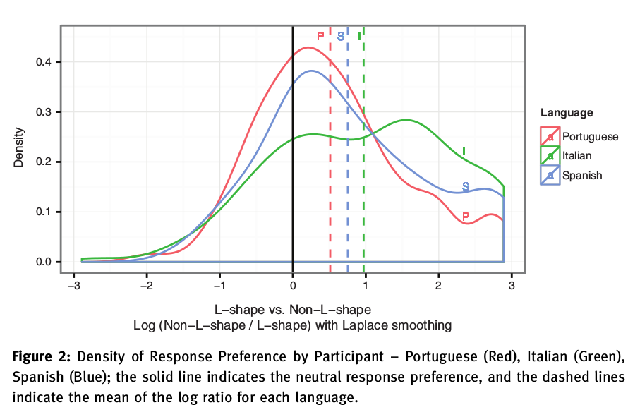
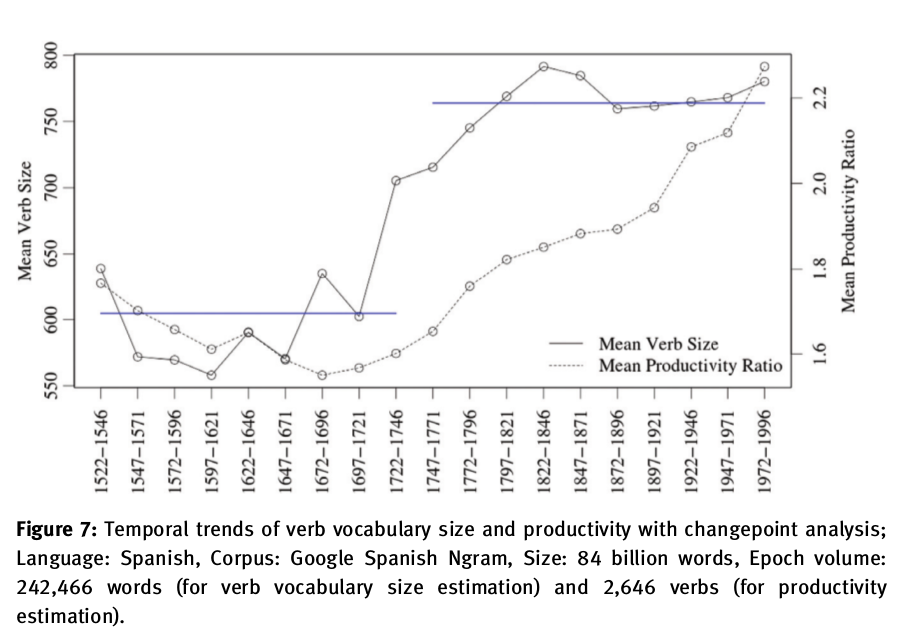

The rise and fall of the L-shaped morphome: diachronic and experimental studies
Project Summary:
It has been suggested that the Romance first person singular indicative constitutes a natural class with the present subjunctive paradigm for the purposes of stem selection (Maiden 2005), thus forming a kind of ‘diagonal syncretism’, as the latter shares no morphosyntactic features with the former. The existence of such patterns has been taken to be an argument for autonomous morphology and the existence of unnatural ‘morphomes’, in the sense of Aronoff (1994). Our experimental investigations with native speakers of Portuguese, Italian, and Spanish reveal that this pattern is underlearned, and that speakers do not generalize it to novel forms, instead preferring the 2nd person singular indicative to the 1st person as the base for the derivation of the subjunctive paradigm (and the 2nd person indicative as opposed to the 2nd person subjunctive as the base for the derivation of the 1st person indicative as well). The results implicate a role for naturalness biases in morphological structure, and an awareness that the first person singular is an unreliable and idiosyncratic base for productive inflectional identity. We then study the underlearning of the L-morphome in terms of historical change in the salience of these patterns. We demonstrate, through means of diachronic corpus studies spanning five centuries, a change in the ratio of first conjugation verbs to second & third conjugation verbs, and a resulting decrease in the relative type frequency of where morphomic verbs reside. If indeed learners need increased evidence in order to incorporate and actively uptake unnatural patterns, this lexical support has dwindled over time. Even though many of the morphomic verbs have maintained a very high token frequency (allowing them to survive as memorized), their productivity has diminished over time, and hence they go unlearned as a generalizable pattern. When the distribution of irregular alternations is overshadowed in the lexicon, a morphologically unnatural pattern may cease to maintain its status as part of the grammar.
Read more from:
Publications:
Nevins, A., Rodrigues, C. & Tang, K. 2015. The rise and fall of the L-shaped morphome: diachronic and experimental studies. Probus: International Journal of Latin and Romance Linguistics 27(1). 101--155. http://dx.doi.org/10.1515/probus-2015-0002 [pdf] [bib]
Tang, K., & Nevins, A. (2013) Quantifying the Diachronic Productivity of Irregular Verbal Patterns in Romance. UCL Working Papers in Linguistics 25. [For the latest version: pdf] [bib]
Non-Productivity of the L-shaped Morphome

Diachronic decline in L-shaped Lexical Support

N.B. Productivity ratio is defined as ar/(ir + er), with ir and er being the irregular verbs.